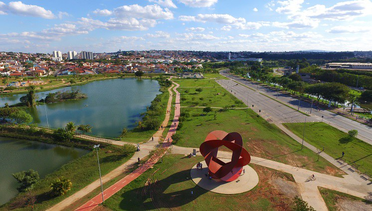
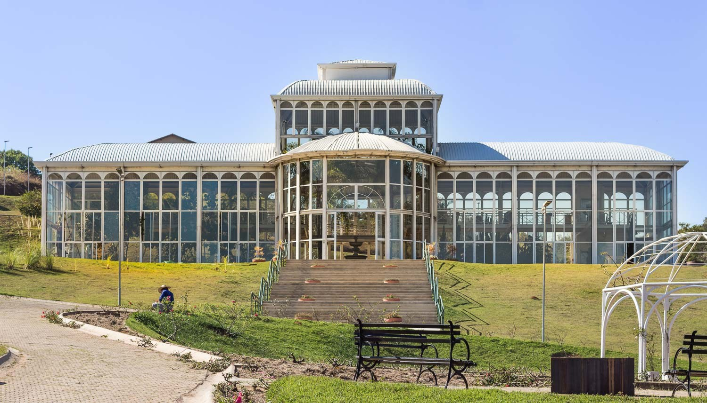

Parque das Aguas

Área pública é parque ao ar livre com percursos e aparelhos de exercício, quiosques, e recantos de descanso.
Jardim Botanico

O Jardim Botânico Irmãos Villas Bôas localiza-se no município de Sorocaba. A intenção da criação do jardim é o estudo e pesquisa da flora da região, além de desenvolver a consciência ambiental e lazer da cidade de Sorocaba.